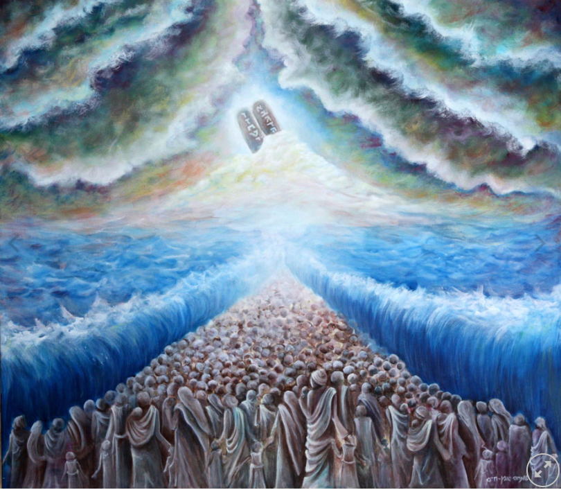

יציאת מצרים – איך הכל התחיל

"וַיֹּאמֶר ה' אֶל מֹשֶׁה: בֹּא אֶל פַּרְעֹה, וְאָמַרְתָּ אֵלָיו כֹּה אָמַר ה' – שַׁלַּח אֶת עַמִּי וְיַעַבְדֻנִי."
הסיפור של יציאת מצרים
יציאת מצרים היא אחד האירועים המרכזיים בתולדות עם ישראל. בני ישראל חיו במצרים במשך שנים רבות וסבלו מעבדות קשה תחת שלטונו של פרעה. ה' שלח את משה להוביל אותם אל החירות, ולאחר עשר המכות הסכים פרעה לשחרר את העם.
בני ישראל יצאו ממצרים, חצו את ים סוף בנס והמשיכו את דרכם במדבר. בהר סיני קיבלו את התורה והחלו לבנות את חייהם כעם חופשי ובעל זהות משלו.
הרחבה לחוקרים במוזיאון
לחצו כאן כדי לגלות מה היו עשר המכות
דם, צפרדע, כנים, ערוב, דבר, שחין, ברד, ארבה, חושך, מכת בכורות.
המשמעות של יציאת מצרים
יציאת מצרים מסמלת חירות, אמונה ותקווה. בכל שנה בחג הפסח אנו מספרים מחדש את הסיפור וזוכרים את הדרך מעבדות לחירות ואת המשמעות של החופש בחיינו.
רוצים לקרוא עוד על הרקע ההיסטורי? לערך המלא בוויקיפדיה